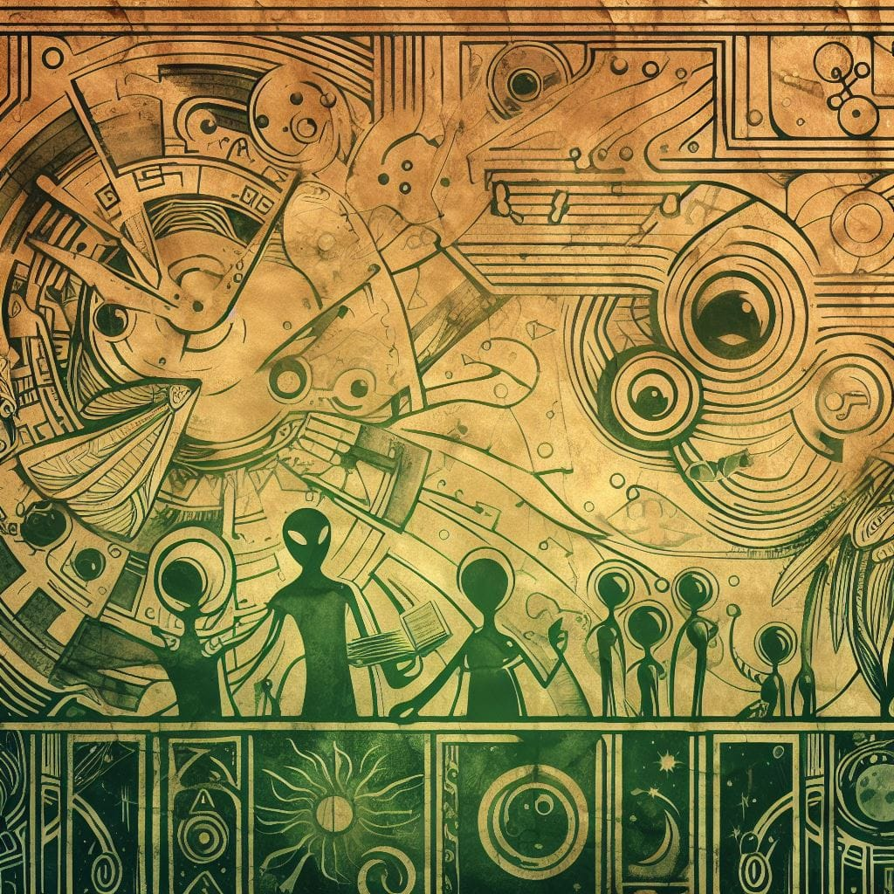
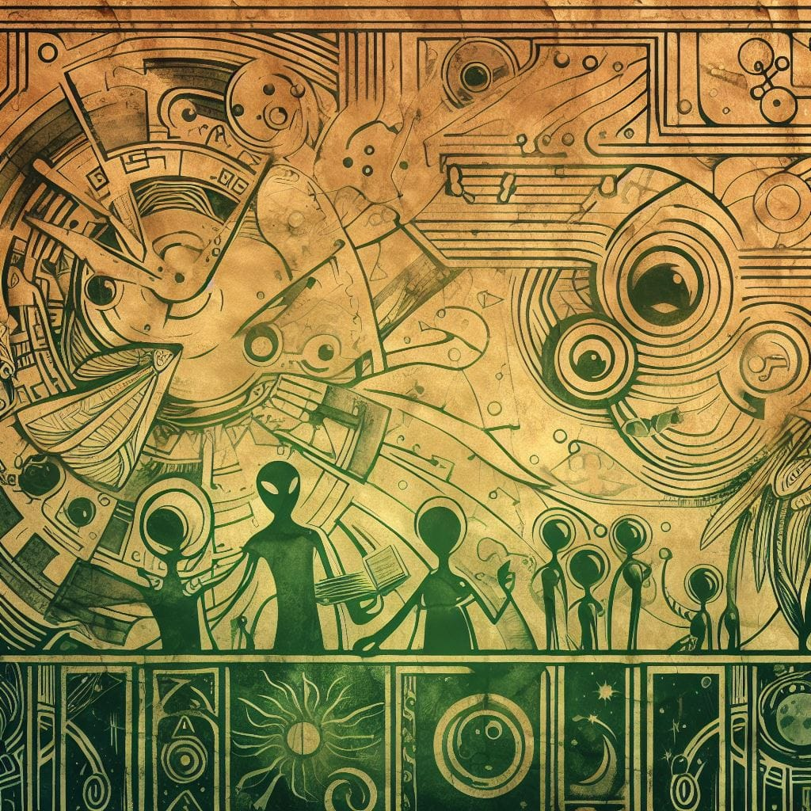

History
In 2049, the HWO (Habitable Worlds Observatory) Mission redefined its focus, dedicating itself to the search for signs of life on exoplanets. During this mission, the planet Aslan was unveiled. NASA, imbued with a spirit of exploration, launched an audacious expedition with a pair of penguins named after notable figures. The male, Astro, symbolizing the countless stars discovered, and the female, Janet, in tribute to Neil Armstrong's first wife.
Given the distance between Earth and Aslan in light-years, approximately a 100 light-years, the team developed a hibernation chamber that preserves body cells for a predetermined period. Astro and Janet, along with other small animals, such as rats and birds, remained in hibernation for most of the journey, and only woke up six months before landing. During this period, a series of tests, including reactions to blood oxygenation and exposure to the atmosphere, was conducted. Notably, Astro and Janet demonstrated to be the least affected by these changes.
 

Aslan, a planet 20% larger than Earth, stands out for its unique land-water ratio. Aslan's balanced distance from the Sun results in temperatures favorable to life. A distinctive feature is its slower rotation, making one part constantly illuminated by the Sun, while the other experiences long periods of darkness. Despite the lack of water dominance on the planet, the atmosphere contains water vapor and oxygen, although a relatively low level of radiation was recorded during atmospheric research.
 Return
Return